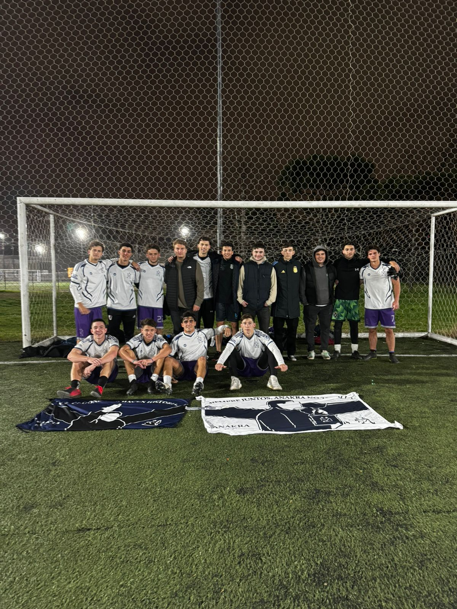
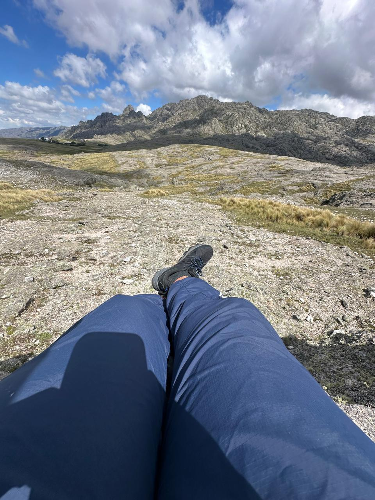
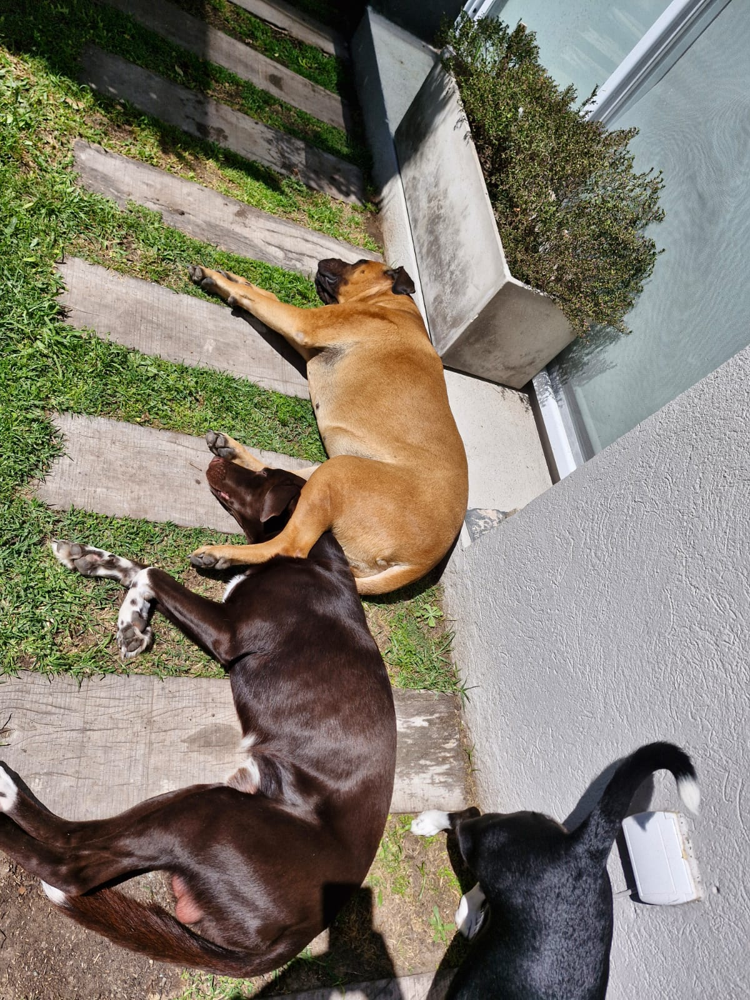

Me gusta jugar al fútbol con mis amigos, incluso tenemos un equipo llamado Anakra. También sigo a mi equipo favorito, River Plate y voy a la cancha frecuentemente.

Disfruto viajar y conocer nuevos lugares y culturas, ya sea con familia o amigos. Abajo dejo una imagen de mi última visita a Córdoba!

Tengo 3 perros, Pepa, Loki y Shiva. Pepa es la negra, y es la mayor. Shiva es la marrón clarita, y es la del medio y Loki es el marrón oscuro y es el mas chico.
